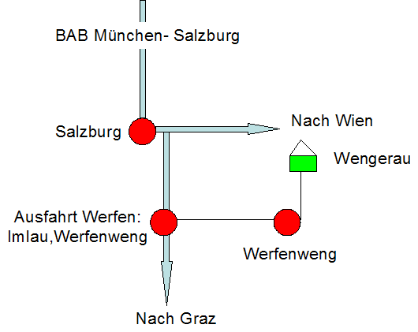

Werfenweng liegt auf einer Höhe von 900m am Rande des Tennengebirges dessen Gipfel bis auf 2400m reichen.
Anfahrt:
- Mit dem Auto: von Deutschland am einfachsten und schnellsten über die Autobahnen München- Salzburg und Graz-Villach. Diese verlassen sie nach ca. 30 km bei der Ausfahrt Werfen und folgen dem Wegweiser Imlau, Pfarrwerfen und Werfenweng
- Mit der Bahn: Bahnstation Bischofshofen, von dort aus mit dem Bus (hält direkt vor dem Bahnhof) nach Werfenweng
